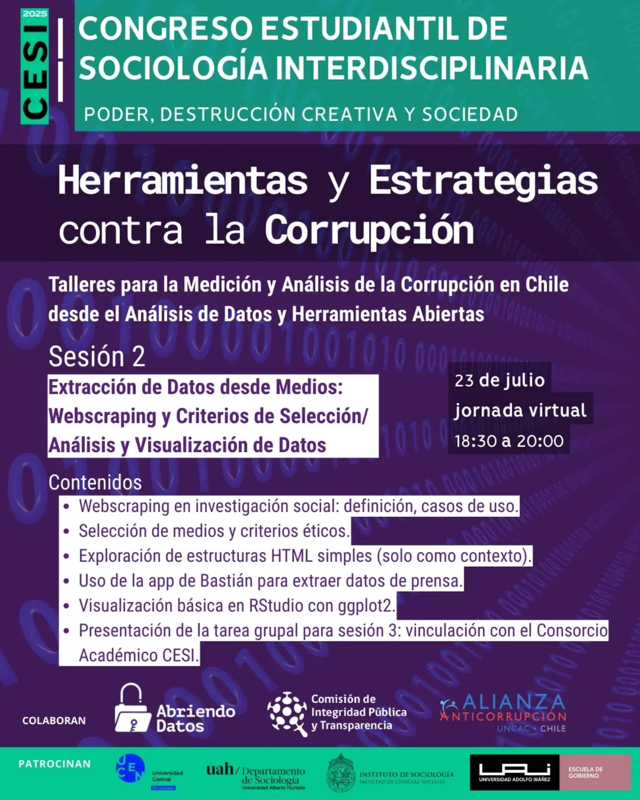

Video: Taller Medición y Análisis de la Corrupción en Chile desde el Análisis de Datos y Herramientas Abiertas
23/7/2025
Taller online que impartí para el Congreso Estudiantil de Sociología Interdisciplinaria. En este taller introduje a estudiantes de sociología al lenguaje de programación R, explicando los beneficios del análisis de datos desarrollado en flujos de trabajo basados en la programación, y las posibilidades que se abren para producir estudios y obtener resultados usando código. Puse énfasis en el uso de tecnologías y datos abiertos, y en el principal beneficio de la programación (en mi opinión): el poder actualizar resultados, aplicaciones y visualizaciones automáticamente.
Herramientas y Estrategias contra la Corrupción: Talleres para la Medición y Análisis de la Corrupción en Chile desde el Análisis de Datos y Herramientas Abiertas
Sesión 2: Extracción de Datos desde Medios: Web scraping y Criterios de Selección/ Análisis y Visualización de Datos
- Web scraping en investigación social: definición, casos de uso.
- Selección de medios y criterios éticos.
- Exploración de estructuras HTML simples (solo como contexto).
- Uso de la app de Bastián para extraer datos de prensa.
- Visualización básica en RStudio con ggplot2
Aplicaciones vistas en la sesión
Código
En este repositorio está todo el código usado en el taller.
-
Ejemplo de web scraping de un medio digital chileno:
scraping.qmd -
Ejemplo de modelamiento de tópicos en análisis de texto:
modelamiento_stm.R -
Análisis de datos de un corpus de noticias de corrupción (6.000 noticias):
explorar.qmd, los datos están disponibles en:datos/prensa_corrupcion.parquet
Datos
- Base de datos de casos de corrupción: https://github.com/bastianolea/corrupcion_chile/ (descargar en formato Excel)
- Datos de prensa chilena: https://github.com/bastianolea/prensa_chile
- Datos obtenidos en ejemplo de web scraping:
datos/noticias.csv - Base de datos con noticias de corrupción (6.000 noticias), desde 2023 a julio de 2025:
datos/prensa_corrupcion.parquet - Base de datos con muestra de noticias chilenas (10.000, al azar) de toda temática del año 2024:
datos/prensa_datos_muestra.csv